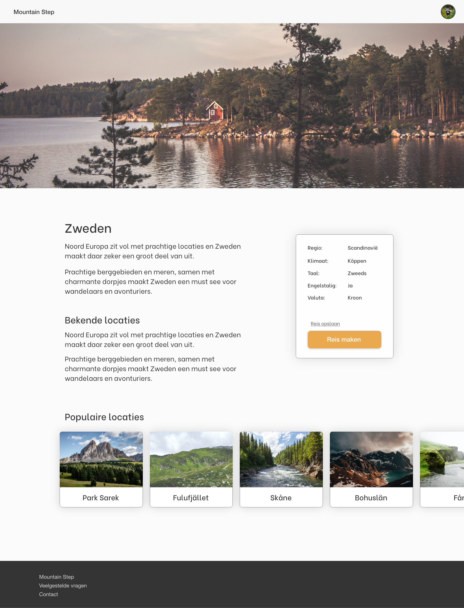
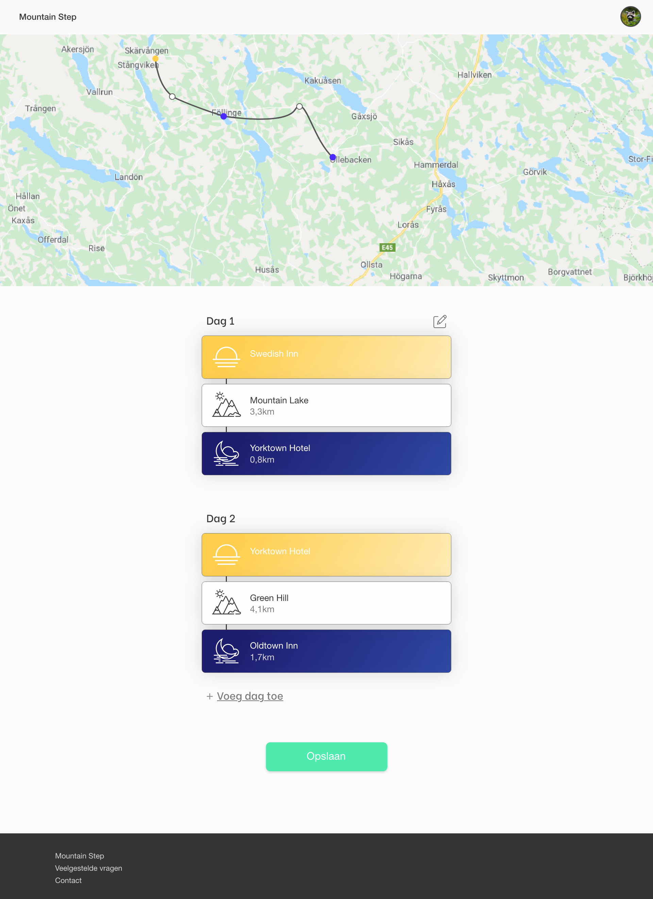
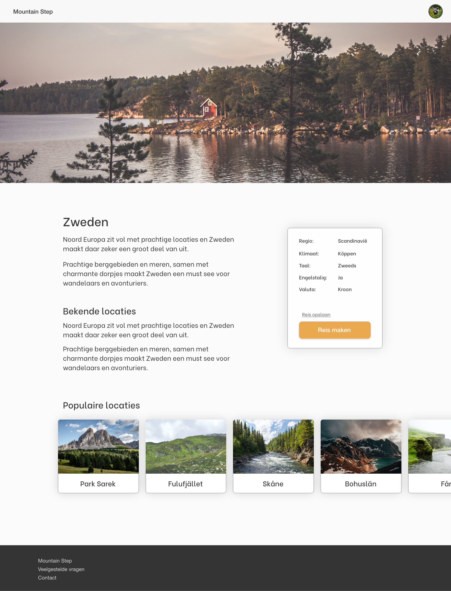
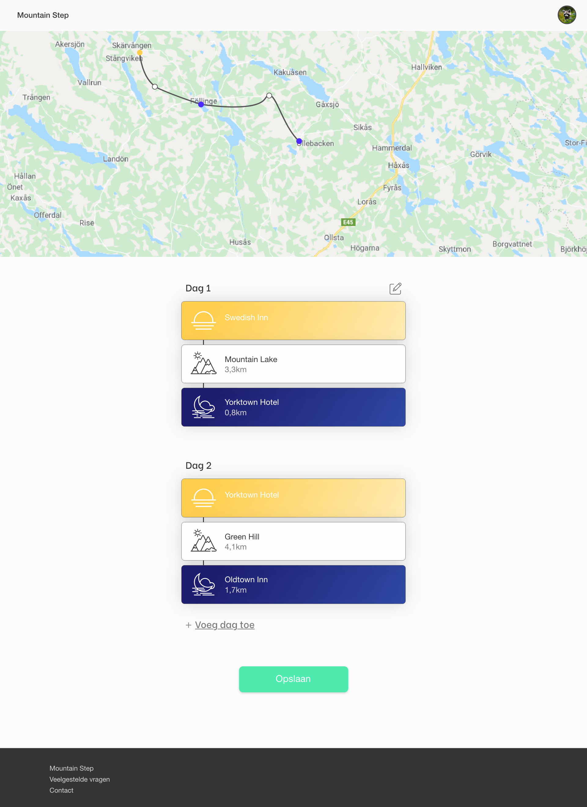
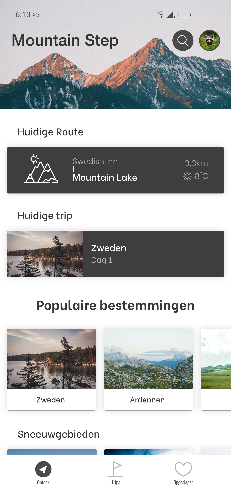
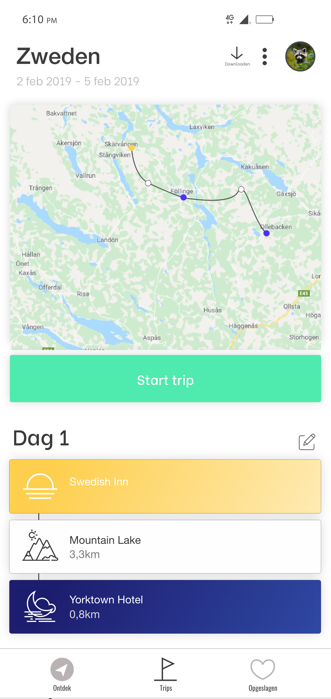
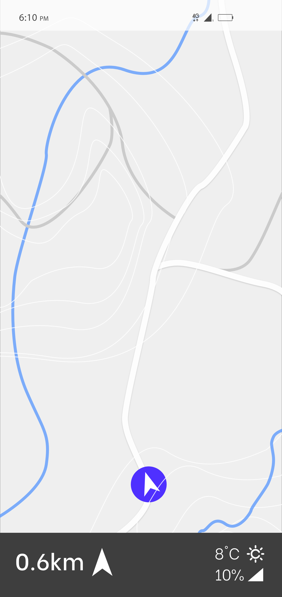
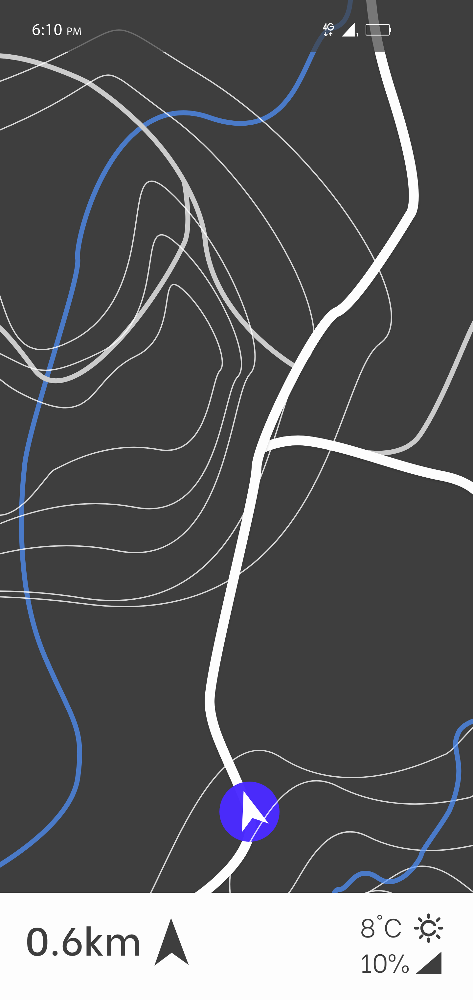

Mountain Step
Voor een individueel project in het tweede leerjaar, heb ik een concept voor hikers bedacht en ontwikkeld in de vorm van een multi-device prototype voor web en smartphone. De app kan hikers die graag op reis willen gaan in het buitenland helpen, doordat de eindgebruiker verschillende locaties toevoegt aan zijn of haar reis en zo een planning maakt. Vervolgens kan de eindgebruiker zodra de reis start een route tussen iedere opgeslagen locaties bekijken.
Desktop
Voor desktop heb ik een prototype gemaakt die in dit concept gebruikt voordat de reis plaatst vindt. De eind gebruiker kan verschillende locaties opzoeken en opslaan om zo een planning van de gewenste reis te maken.
 



Smartphone
Zodra de reis begint kan de eindgebruiker in de app zijn of haar gemaakte reis bekijken, samen met de daarbij horende route zodat de reis zorgeloos gemaakt kan worden.
   Rationale
De onderstaande link laat uitgebreider zien hoe het concept gebruikt kan worden:
Zie hier de rationale.